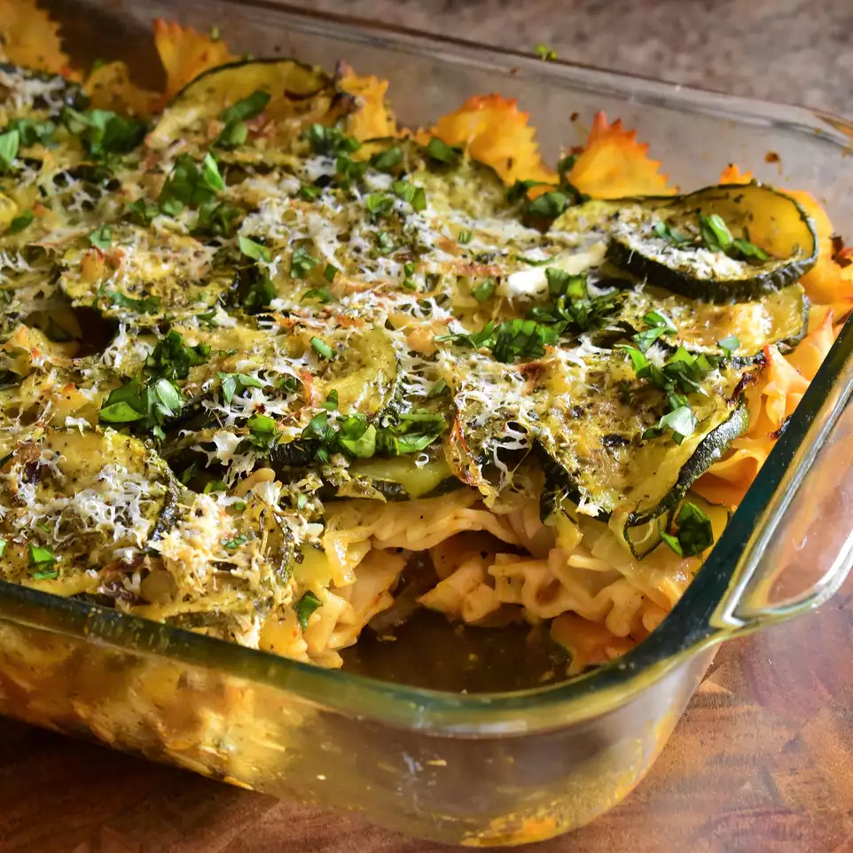

oasted-Zucchini-Casserole Recipe

Ingredients
- 3 medium zucchinis, sliced
- 2 medium onions, sliced
- 3 tablespoons olive oil
- salt and ground black pepper to taste
- 1 (16 ounce) package penne pasta /li>
- ½ cup grated Parmesan cheese
- 1 (28 ounce) jar marinara sauce
Directions
Step 1
Preheat oven to 400 degrees F (200 degrees C).
Step 2
Toss zucchinis and onions in a large bowl with olive oil until evenly coated. Spread vegetables into a large baking dish.
Step 3
Roast vegetables in the preheated oven until golden, about 30 minutes. Season with salt and pepper. Reduce oven heat to 350 degrees F (175 degrees C).
Step 4
Fill a large pot with lightly salted water and bring to a boil. Stir in penne and return to a boil. Cook pasta uncovered, stirring occasionally, until cooked through but still firm to the bite, about 11 minutes; drain.
Step 5
Lightly grease a 9x13-inch baking dish.
Step 6
Heat marinara sauce in a saucepan over medium heat until sauce is hot. Spread hot marinara sauce into the prepared baking dish, followed by penne pasta and zucchini mixture. Sprinkle Parmesan cheese atop vegetables.
Step 7
Bake in the preheated oven until sauce is bubbly, 35 to 40 minutes. Allow casserole to rest for 5 minutes before serving.
Nutrition Facts
Per Serving: 375 calories; protein 12.3g; carbohydrates 59.5g; fat 10.6g; cholesterol 6.4mg; sodium 489.7mg.
Return to the Main Page